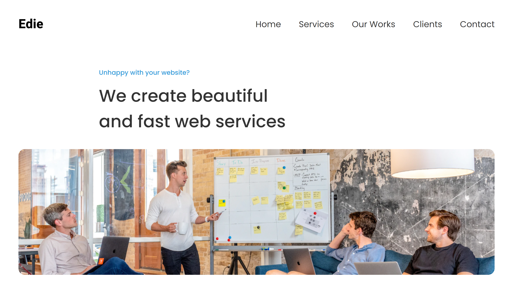

IP Address Tracker
Built with :
- Javascript
- IP Geolocation API by IPify
- Leaflet.js Library
- Fetch & Async await
- Mobile-First Workflow
Features
- You can see your own IP Address on initial page load
- User can search for any IP Address and see the key information and location.
- Click on the map to show you the exact latitude and longitude of the point clicked , in a popup.
- The location icon shows the location of the IP Address, and a popup on it shows the IP currently being located.
- When a wrong IP Address is inputted or there's an error in loading the IP's information, an error popup shows up.
.png)
Sunnyside Landing Page
Built with :
- React.js
- React Hook
- Tailwind css
- Mobile-First Workflow
Features
- You can see your own IP Address on initial page load
- User can search for any IP Address and see the key information and location.
- Click on the map to show you the exact latitude and longitude of the point clicked , in a popup.
- The location icon shows the location of the IP Address, and a popup on it shows the IP currently being located.
- When a wrong IP Address is inputted or there's an error in loading the IP's information, an error popup shows up.


Edie Homepage
Built with :
- Javascript
- Semantic HTML
- SCSS
- Figma
- BEM methodology
- Mobile-First Workflow
Features
- Pixel-Perfect replica of the figma design,both on mobile and desktop.
- Mobile Navigation.
- The location icon shows the location of the IP Address, and a popup on it shows the IP currently being located.

Rock-Paper-Scissors game
Built with :
- Javascript
- Semantic HTML
- SCSS
- DOM and setTimeout APIs
- BEM methodology
- Mobile-First Workflow
Features
- Play unlimited rounds of rock-paper-scissors game against the computer (Sorry, it often beats me too)
- Each round is won by the first to score 5 points.
- 'Play again' modal pops-up at the end of every round, to restart the game when you're ready.